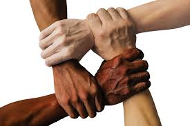

A ods 16 (paz,Justiça e Instituições Eficazes)se trata de promover sociedades pacíficas e inclusivas para o desenvolvimento sustentável, proporcionar o acesso à justiça para todos e construir instituições eficazes, responsáveis e inclusivas em todos os níveis.

Suas propostas para até 2030 são:
°Reduzir todas as formas de violência e acabar com os maus-tratos,
exploração e tráfic de pessoas.
°Promover o estado de direito em âmbito nacional e interracional e
garantir a igualdade de acesso a justica para todos.
°Combater o crime organizado e a corrupção;
Essas são só algumas das propostas.